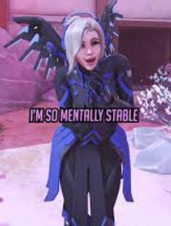

Overwatch é um jogo lançado no ano de 2016 sendo um jogo de tiro em primeira pessoa com vários personagens diferentes para se jogar tendo 21 deles, após isso o jogo começou a crescer mais e foi ganhando cada vez mais personagens tendo no momento 40 personagens únicos com um jeito de jogar diferente. No começo de 2016 até outubro de 2022 o jogo era 6 contra 6, mas, com o lançamento do overwatch 2 em 2022 o jogo se tornou 5 contra 5, nele tinham por equipe 2 tanques, 2 dps e 2 suportes, agora temos apenas 1 tanque 2 dps e 2 suportes.
No jogo temos 3 funções que cada uma tem o seu dever em uma partida, a primeira delas é o tanque, o tanque tem que proteger o time e ajudar ele a não morrer, os personagens tanques são os que mais tem vida entre eles temos os seguintes personagens: Reinhardt, d.va, doomfist, zarya, rammatra, Winston e roadhog
A segunda função é o dps, o dps é quem mais vai dar dano na maioria dos casos, a grande maioria das habilidades de um dps são focadas em dar dano (dps significa dano por segundo(damage per second)) eles tem uma quantia padrão de vida e entre eles nós temos: soldado 76, reaper, genji, Cassidy(anteriormente conhecido como Mccree), venture, bastion e tracer
A terceira e ultima função é suporte, os suportes são quem fornecem cura e aumento de força/velocidade para os aliados, eles tem uma quantidade padrão de vida e entre eles nós temos: ana, Mercy, lucio, zenyatta, kiriko e baptist
O jogo possui 2 modos principais de jogo, eles sendo: jogo rápido e jogo competitivo, o jogo rápido é (assim como o nome fala) rápido, ele é para jogadores mais casuais ou jogadores que não querem ficar muito irritados jogando competitivo. O modo competitivo por outro lado dura mais tempo e é para jogadores que querem um desafio um pouco maior no jogo, quanto mais você ganhar partidas no competitivo maior o seu ranque vai ser, e quanto maior o seu ranque é você vai jogar com e contra jogadores mais habilidosos e experientes, os ranques do jogo competitivo são: bronze, prata, ouro, platina, diamante, mestre, grão mestre e top 500.
winston
1. winston é um personagem da classe tank que possui 2 habilidades, 2 tipos diferentes de tiro e 1 habilidade suprema
2. sua arma principal se chama canhão de tesla, ela é uma arma que possui 2 tipos diferentes de tiro, o primeiro é em forma de "spray" ja o segundo é em forma de um "tiro"
3. a sua primeira habilidade se chama salto a jato, em que o winston pula para frente como forma de locomoção, pousar em algum inimigo causa dano a ele
4. a sua segunda habilidade se chama projetor de barreira, essa habilidade é mais defensiva, quando voce usa ela cria uma barreira em formato de redoma em um ponto fixo
5. a habilidade suprema dele se chama furia primata, quando ele usa a habilidade suprema ele recebe mais vida, porém ele só consegue bater e pular.
doomfist
1. doomfist é um personagem da classe tank que possui 1 arma principal, 3 habilidades e 1 habilidade suprema
2. a arma principal dele se chama canhão de mão, essa arma possui 4 tiros de curta distancia que se espalham enquanto vijam, ela se recarrega automaticamente
3. a sua primeira habilidade se chama soco foguete, essa habilidade tem que segurar para dar o maior dano possivel, ao soltar o botão o doomfist da uma investida para frente que joga os inimigos para longe e atordoa caso acertem a parede
4. a sua segunda habilidade se chama abalo sismico, nessa habilidade doomfist salta e bate no chão ao bater no chão ele liber uma "onda de choque" que ao acertar os inimigos da mais vida para ele
5. a sua terceira habilidade se chama bloqueio energético, ao usar ela ele se protege de ataques frontais, bloquear esses ataques dessa maneira energiza o soco foguete deixando ele mais forte
6. a sua habilidade suprema se chama impacto meteoro, ao usar essa habilidade doofist pula beeeeem alto, enquanto ele esta no céu voce tera 4 segundos para definir onde cair, após cair vai matar um dps ou suporte que esteja dentro do circulo de aterrissagem, se estiverem um pouco fora vão apenas receber dano

bastion
1. bastion é um personagem da classe dps que possui 2 tipos de tiros, 2 habilidades e 1 habilidade suprema
2. a sua arma principal se chama configuração: reconhecimento, ela é uma arma que da pouco dano, porém tem uma boa mobilidade e é mais precisa do que a sua arma secundaria
3. a sua arma secundaria se chama configuração: ataque, o bastion se transoforma em um tank lentinho porém ele tem uma metralhadora de tambor giratório que atira beeeeeeeeem rapido, porém ele perde mobilidade e precisão
4. a sua primeira habilidade se chama granada tática A-36, essa habilidade joga uma bombinha que ricocheteia nas paredes e explode ao atingir um inimigo ou o chão
5. a sua segunda habilidade se chama reconfigurar, essa habilidade permite que o bastion troque entre as configurações: ataque e reconhecimento
6. a sua habilidade suprema se chama configuração: artilharia, quando ele usa essa habilidade ele se transforma em uma espécie de morteiro e atira 3 bombas que dão dano em uma área de tamanho médio, quando voce usa essa habilidade você tera 6 segundos para escolher onde cada bomba vai cair, mas, você ficara vulneravel
genji
1. genji é um personagem da classe dps que possui 1 arma principal, 2 habilidades, 1 habilidade suprema e 1 habilidade passiva
2. a sua arma principal se chama shuriken, quando genji atira ele manda 3 shurikens uma seguida da outra, porém, se voce apertar o botão de tiro secundario ele manda 3 shurikens em forma de cone dando mais dano a curto alcance
3. a sua primeira habilidade se chama desviar, quando ele usa essa habilidade ele desvia os projéteis inimigos para a direção em que ele esteja olhando, atacar por tras não fara os projéteis serem desviados
4. a sua segunda habilidade se chama golpe veloz, ao usar essa habilidade ele avança para frente raapidamente e da dano em inimigos no caminho, matar inimigos fara com que o tempo de espera da habilidade seja reduzido para 0
5. a sua habilidade passiva se chama ciber-agilidade, com ela ele escala paredes e pode realizar um pulo duplo
6. a sua habilidade suprema se chama lamina do dragão, ao usar essa habilidade ele usa uma espada para dar cortes poderosos em seus inimigos, com isso ele só consegue bater no corpo a corpo, porém essa habilidade é util para se livrar de varios inimigos ao mesmo tempo

mercy
1. mercy é um personagem da classe suporte que possui 2 armas principais, 2 habilidades, 1 habilidade passiva e 1 habilidade suprema
2. a sua primeira arma principal se chama bastão de caduceu, quando mercy aperta o botão de tiro primario ele lança um raio de cura que cura o aliado em quem ela esta mirando, porém, quando ela aperta o botão de tiro secundario, ela manda um raio de aumento de dano que bem, aumenta o dano do aliado em quem ela esta mirando
3. a sua segunda arma principal se chama desintegrador de caduceu, essa arma é uma pistola automatica de 25 tiros que da dano baseado na porcentagem de vida máxima do oponente
4.